Innovation und Digitalisierung
Arbeitskreis des FBZ e.V., An- Institut der Hochschule Merseburg

DIGITALE ZWILLINGE
Besitzen Sie ein Ferienhaus und möchten sich von Ihren Mitbewerbern absetzen? Gewähren sie Ihren Gästen bereits vor der Buchung einen Blick in ihr Feriendomizil und lassen die Urlaubsstimmung bereits im heimischen Wohnzimmer beginnen. Gestalten Sie Events und lassen Feiern zu ganz besonderen Erinnerungen werden? Bieten Sie Ihren Kunden die Möglichkeit Ihre Locations direkt zu erleben und auf Ihre Bedürfnisse zu prüfen. Sind Sie eine Schule, Hochschule oder andere Bildungseinrichtung, die Ihren Studienintessierten mehr bieten will? Mit einem digitalem Abbild ihrer Einrichtung kann direkt mit dem Erkunden der Anlage begonnen werden und ein Einleben und Orientieren fällt um so leichter. Sind sie Inhaber einer Altstandsimmobilie ohne aktuellen Grundriss? Auch hier kann ein Digitaler Zwilling Abhilfe schaffen und Ihnen schnell und unkompliziert die Möglichkeit bieten diese Unterlagen zu erstellen. Wir von der Hochschule Merseburg bieten Ihnen im Rahmen von Forschungsprojekten die Möglichkeit unsere Dienste in Anspruch zu nehmen und stehen Ihnen als kompetenter und erfahrener Partner der Region zur Seite. Zur unverbindlichen Beratungen über die Möglichkeiten melden Sie sich bei Prof. Dr.-Ing. Lutz Klimpel.
WAS IST EIN DIGITALER ZWILLING?
Ein Digitaler Zwilling ist ein digitales Abbild eines Objektes aus der realen Welt. So können beispielsweise Bauteile, Gebäude oder ganze Städte als digitale 3D-Modelle entstehen. Der Nutzen eines Digitalen Zwillings ist vielfältig und kann in verschiedensten Anwendungsgebieten zum Einsatz kommen. Der Digitale Zwilling bietet die Möglichkeit virtuelle Touren durch Räumlichkeiten oder Areale zu unternehmen, ohne vor Ort sein zu müssen. Dies ermöglicht beispielsweise die Einsparung von Reisezeiten und erlaubt es sich schnell und unkompliziert Eindrücke von Örtlichkeiten zu machen. Es besteht auch die Option Informationen innerhalb des Digitalen Zwillings zu hinterlegen, sogenannte Tags. Hier kann der Besucher inhaltsbezogen Informationen, zu beispielweise einem Gegenstand, abrufen. Tags können mit vielfältigen Daten, wie zum Beispiel Listen, gemessene Sensordaten oder Preisen, hinterlegt werden. Ein Digitaler Zwilling ermöglicht es ebenfalls, Maß von Räumen, Möbeln oder anderen Objekten zu nehmen. Durch ein integriertes Abmaße-Tool, können Umbaumaßnahmen oder Arbeiten direkt im Digitalen Zwilling geplant und geprüft werden. Zur besseren Orientierung innerhalb des Digitalen Zwillings können Etiketten in den Räumen hinterlegt werden. So ist es auf einen Blick sichtbar in welchem Raum bzw. welchem Areal man sich während seiner digitalen Tour befindet. Zur Veranschaulichung der Möglichkeiten werden Ihnen im Folgenden diverse Anwendungsgebiete unterschiedlichster Branchen vorgestellt.
 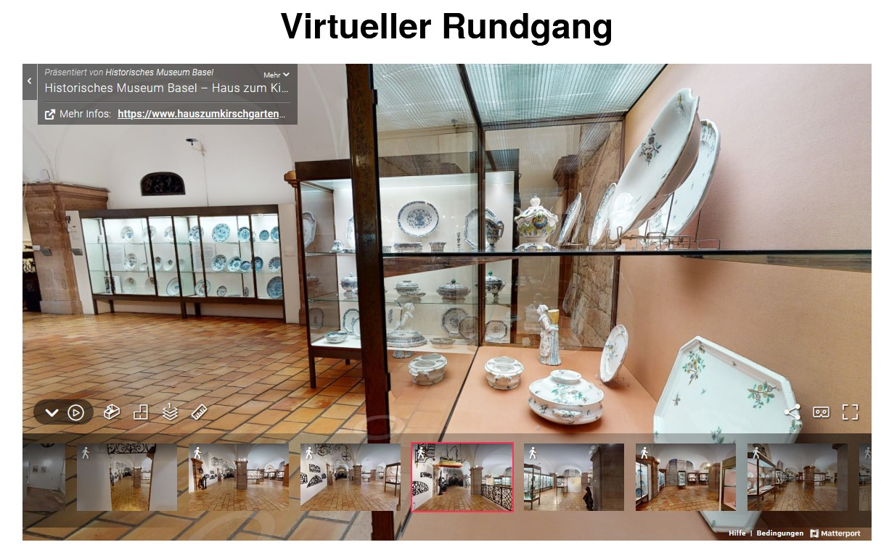
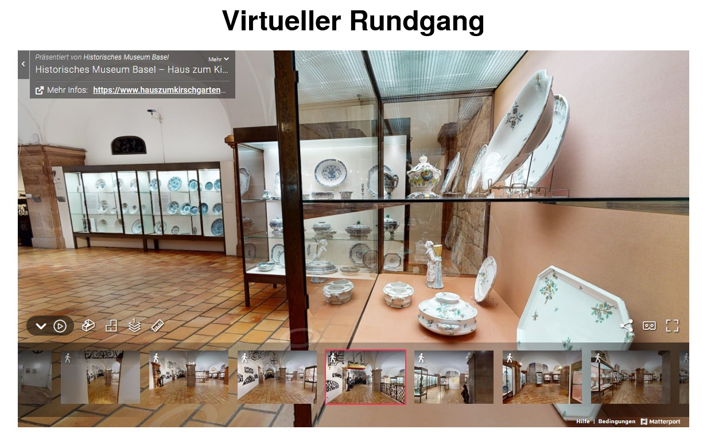
UNSER SERVICE
In der Hochschule Merseburg finden Sie einen erfahrenen und kompetenten Partner aus der Region, der Ihnen mit hoher Fachkompetenz und modernster Technik zur Seite steht. Wir bieten Ihnen eine umfangreiche Beratung um Ihr Unternehmen oder Vorhaben optimal mit einem Digitalen Zwilling zu unterstützen. Zu unserem Leistungsangebot zählt es, zuerst geeignete Anwendungsszenarien zu identifizieren und sinnvoll mit Ihrem Input zu gestalten. Im Weitern Schritt übernehmen wir die Erstellung eines Digitalen Zwillings und die Aufbereitung des Datensatzes mit der Hinterlegung von Tags oder Etiketten. Sollten sensorbasierte Abfragen und optische Ausgaben innerhalb des Digitalen Zwillings (Tags) gewünscht sein, übernehmen wir auch hier die Installation und Verknüpfung für Sie. Sprechen Sie uns gerne an und vereinbaren Sie einen unverbindlichen Beratungstermin mit uns. Wir helfen Ihnen gerne eine individuell passende Lösung für Sie zu finden. Für eine individuelle Beratungen über Ihre Möglichkeiten melden Sie sich bei Prof. Dr.-Ing. Lutz Klimpel.
 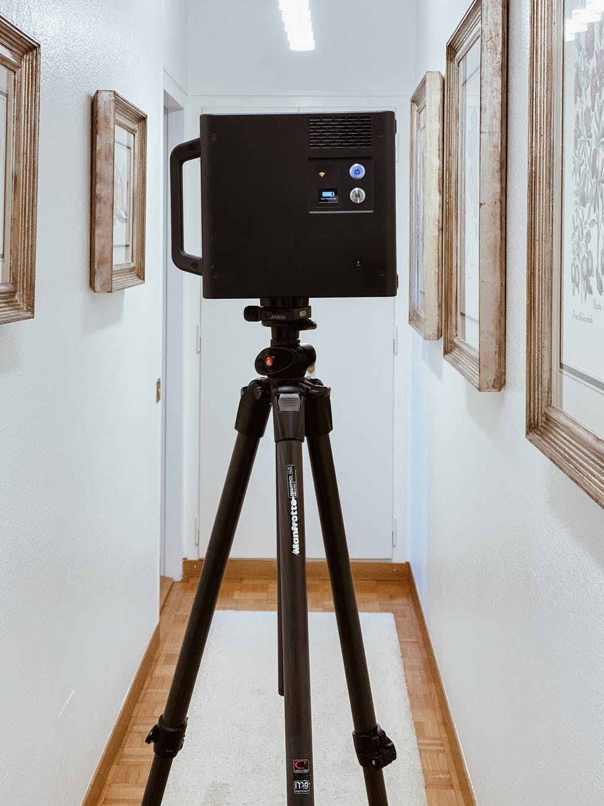
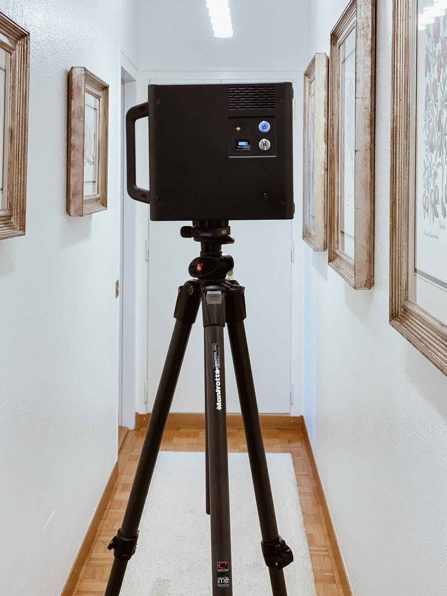
ANWENDUNGSFÄLLE:
3D-Fotografie
Die 3D-Fotografie ermöglicht es detailliere Eindrücke und Landschaften für immer festzuhalten. So können Sie Ihr Lieblingsorte, bedeutende Gebäude oder Momente als Digitalen Zwilling festhalten und jederzeit wieder besuchen. Durch die allumfassende Rundumsicht können Sie sich immer wieder in die Situation begeben und dabei sein, fast wie am Tag der Aufnahme. Gibt es Momente, Feiern oder Orte die Sie für immer einfrieren wollen? Melden Sie sich bei uns und wir besprechen mit Ihnen die Möglichkeiten Ihres eigenen Digitalen Zwillings.


Hauseigentümer
Als Besitzer einer eigenen Immobilie kann ein Digitaler Zwilling mehrere nützliche Funktionen übernehmen. So können Sie Heimwerkerprojekte digital planen und bemaßen, auch die Dokumentation Ihres Inventars für Versicherungen so kann schnell und einfach erfolgen. Sollten Sie Ihr Eigenheim mal verkaufen wollen, können sie einer breiten Maße eine digitale Besichtigung zu jeder Zeit ermöglichen ohne Vorort-Termine durchführen zu müssen. Nach Ihrem Auszug können Sie dann ihren Digitalen Zwilling als Erinnerung an ihr altes Zuhause und schöne Momente behalten/nutzen.
 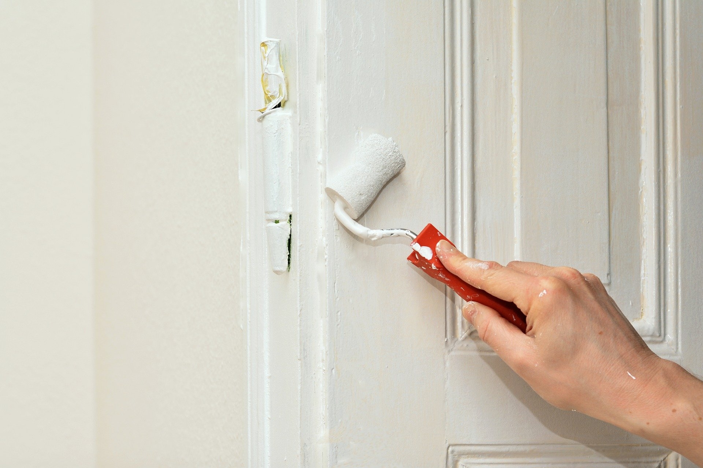
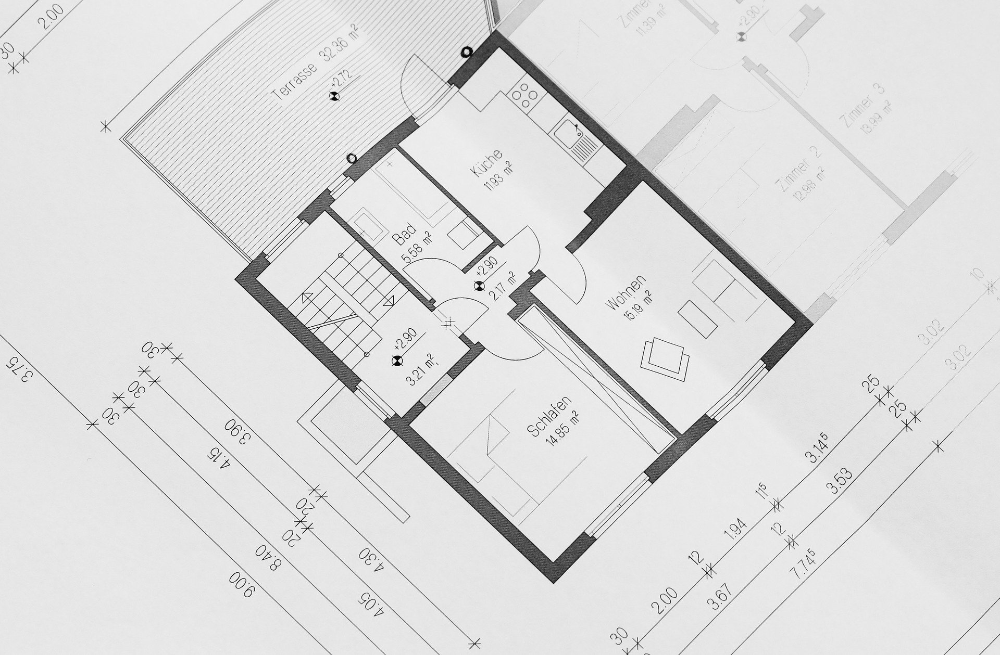
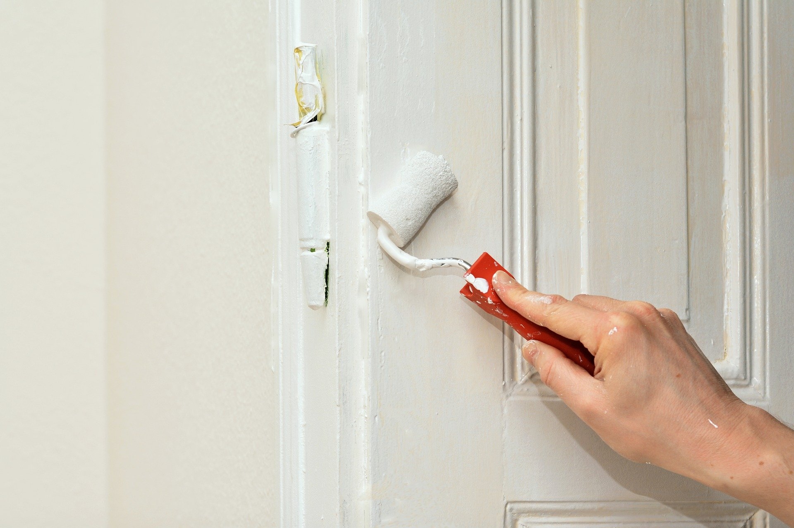
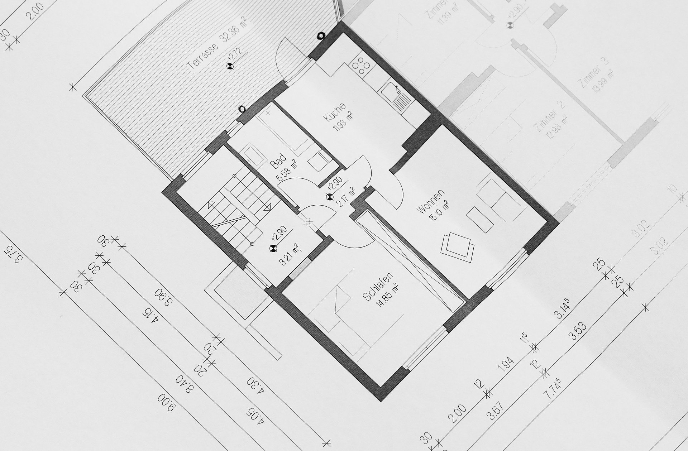
Reise- und Gastgewerbe
Ein Digitaler Zwilling ermöglicht es sich von Orten und Plätzen vorab ein detailliertes Bild zu machen. Gerade im Reise- und Gastgewerbe kann man sich durch einen Digitalen Zwilling im Dschungel der vielen Hotels und Ferienwohnungen gegenüber seinen Mitbewerbern absetzen. Ein Digitaler Zwilling bietet dem Gast die Möglichkeit das Übernachtungsangebot bereits ausgiebig vor der Buchung zu studieren und mit seinen Wünschen und Bedürfnissen abzugleichen. So können spätere Missverständnisse und Unzufriedenheiten aus dem Weg gegangen werden und der Gast kann sich auf einen entspannte und zufriedenen Aufenthalt freuen. Brauchen Sie Unterstützung Ihre Immobilie durch einen Digitalen Zwilling attraktiver für zukünftige Buchungen zu machen? Wir helfen Ihnen gerne.
 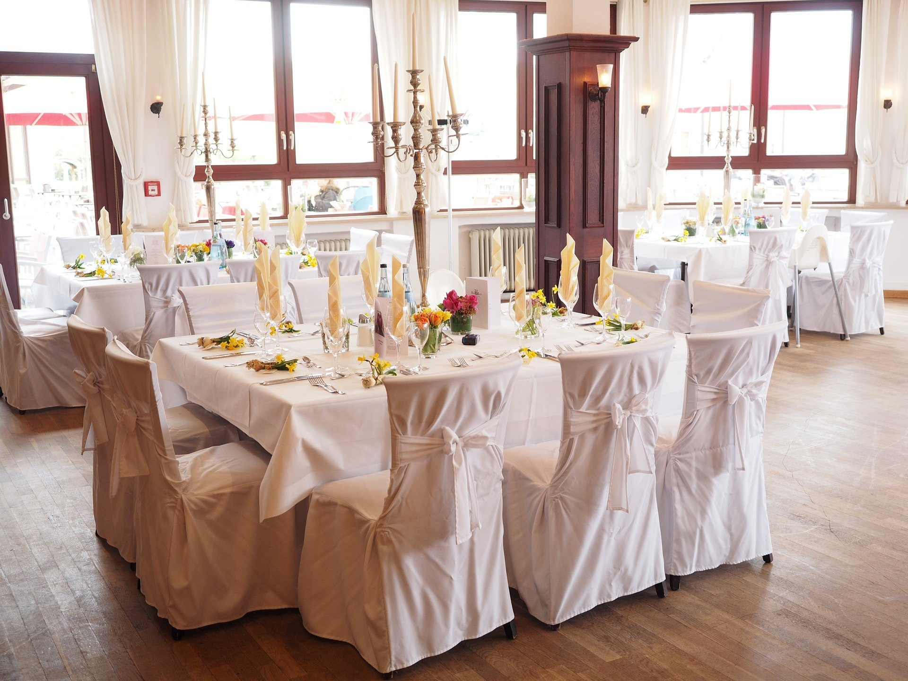
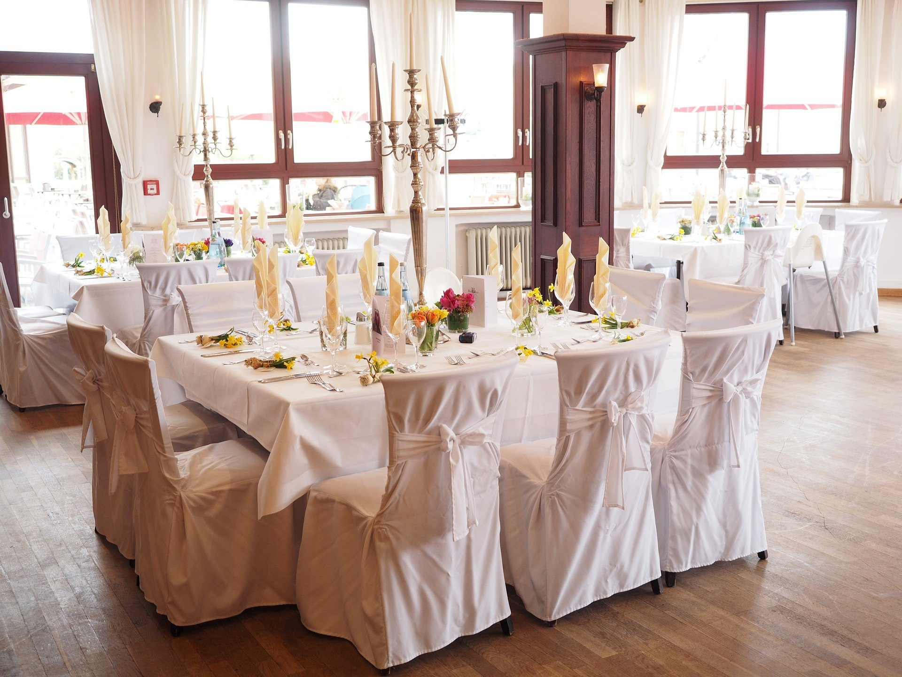
Architektur, Ingenieur und Bauwesen
Im Architektur, Ingenieur- und Bauwesen werden Projekte oft kollaborativ durchgeführt. Zur detaillierten und unkomplizierten Absprache über Maßnahmen im Bauobjekt kann ein Digitaler Zwilling eine attraktive Lösung sein. Es ist so möglich, online am Objekt das Vorgehen zu besprechen und Informationen für durchzuführende Arbeiten direkt zu hinterlegen. Es können Vor-Ort Termine reduziert werden und Inspektionen der Baustelle sind jederzeit möglich. Durch die Möglichkeit der Aufmaße können auch schwer zugängliche Bereiche wie Rohre oder Deckenbalken schnell und unkompliziert bemaßt werden. Auch Grundrisse lassen sich schnell und einfach generieren und für Teilnehmer am Bauprojekt zugänglich machen. Brauchen Sie Unterstützung bei Ihrem Bauprojekt? Sprechen Sie uns gerne an und wir beraten Sie mit unserer Expertise.
 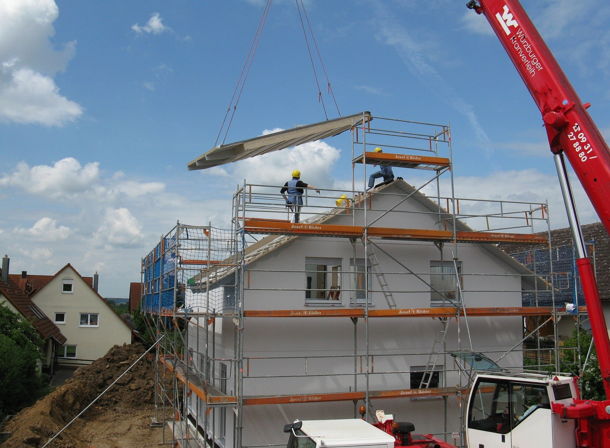
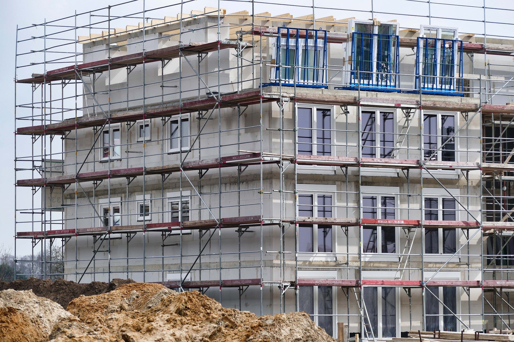
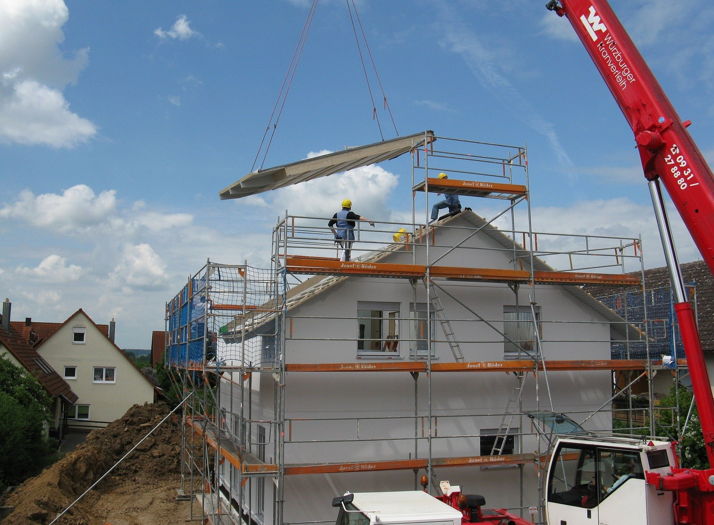
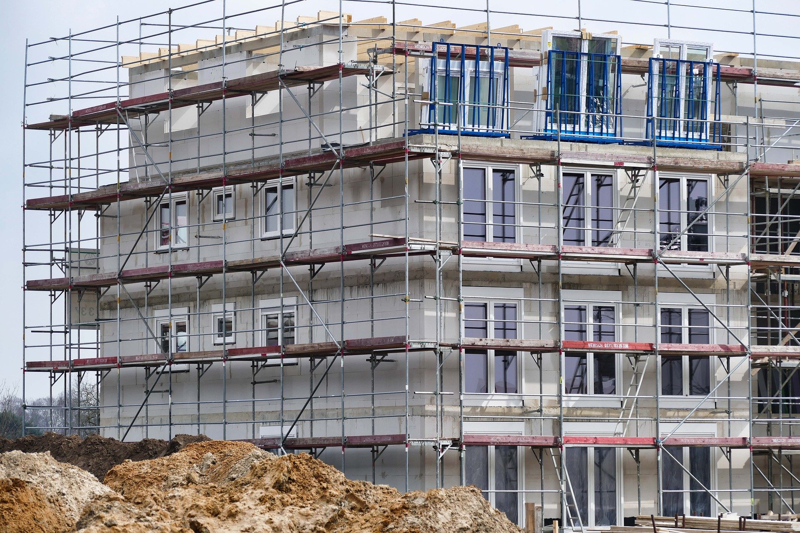